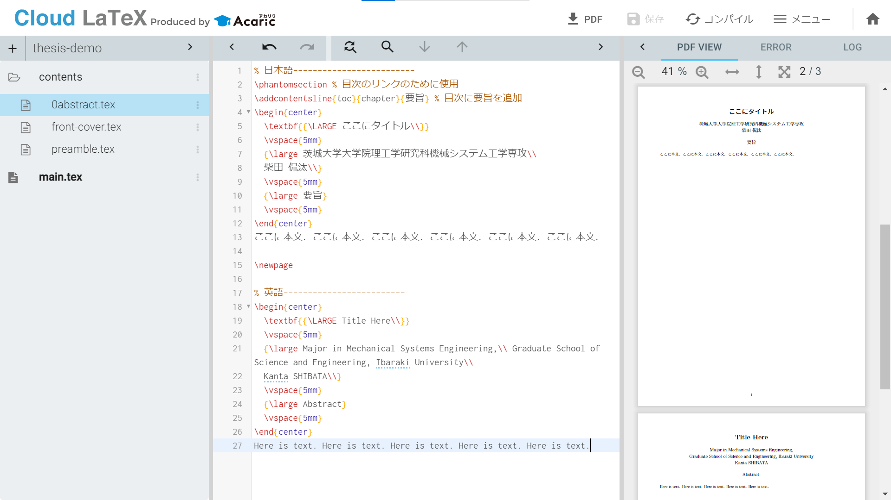

要旨を作る
要旨を作る#
表紙の次は概要(abstract)です．概要は日本語と英語で書きます．ファイルの構成と最終的な仕上がりは下の画像のようになります．

概要の内容は0abstract.texに書き込みます．\vspace{}で任意の間隔を指定してください．ここでは5mmにしています．
0abstract.tex
% 日本語-------------------------
\phantomsection % 目次のリンクのために使用
\addcontentsline{toc}{chapter}{要旨} % 目次に要旨を追加
\begin{center}
\textbf{{\LARGE ここにタイトル\\}}
\vspace{5mm}
{\large 茨城大学大学院理工学研究科機械システム工学専攻\\
柴田 侃汰\\}
\vspace{5mm}
{\large 要旨}
\vspace{5mm}
\end{center}
ここに本文．ここに本文．ここに本文．ここに本文．ここに本文．ここに本文．
\newpage
% 英語-------------------------
\begin{center}
\textbf{{\LARGE Title Here\\}}
\vspace{5mm}
{\large Major in Mechanical Systems Engineering,\\ Graduate School of Science and Engineering, Ibaraki University\\
Kanta SHIBATA\\}
\vspace{5mm}
{\large Abstract}
\vspace{5mm}
\end{center}
Here is text. Here is text. Here is text. Here is text. Here is text.
main.texでは文書クラスのオプション（\documentclass[]{}の[]部分）も指定しました．
main.tex
\RequirePackage{plautopatch}
\RequirePackage[l2tabu, orthodox]{nag}
\documentclass[
platex, % 使用するコンパイラ（2023年2月時点のCloud LaTeXではplatexがデフォルトで使用されている）
dvipdfmx, % ドライバ
fontsize=10pt, % 欧文フォントサイズの指定
jafontsize=10pt, % 和文フォントサイズの指定
book, % bookクラスを選択
openany, % 章が変わったときの空白ページ自動挿入をしない
]{jlreq}
\input{contents/preamble.tex}
\begin{document}
\input{contents/front-cover.tex} % タイトル情報
\pagenumbering{roman} % ページ番号をローマ数字で記載
\input{contents/0abstract.tex} % 概要（日本語，英語）
\end{document}